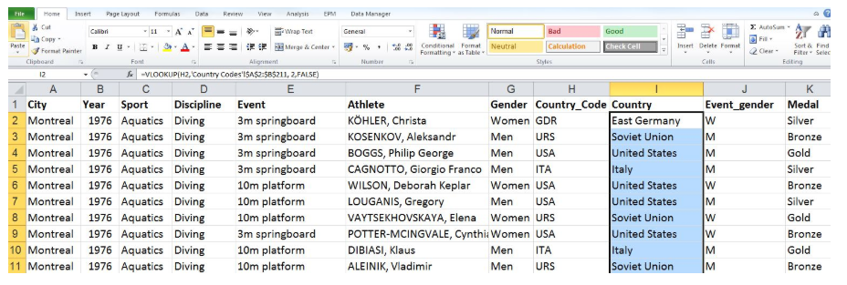
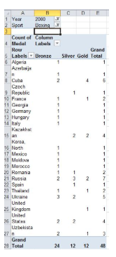

Objectives
In our first set of labs we will be getting familiar with Microsoft Excel.
This tool is used by many organisations to evaluate daily performance and to make critical strategic and operational decisions.
Spreadsheet software for personal computers has become an indispensable tool for business analysis, particularly for the manipulation of numerical data and the development and analysis of decision models. Please note that Mac versions of Excel do not have the full functionality that Windows versions have.
Although Excel has some flaws and limitations from a statistical perspective, its widespread availability makes it the software of choice for many business professionals.
Introduction to Excel
This first lab will briefly review some of the fundamental skills needed to use Excel. This is not meant to be a complete tutorial; many good Excel tutorials can be found online.
The Basics
This lab assumes you are familiar with the most elementary spreadsheet concepts and procedures:
- Opening, saving and printing files.
- Moving around a spreadsheet.
- Selecting ranges.
- Inserting/deleting rows and columns
- Entering and editing text, numerical data, and formulas.
- Formating data.
- Working with text strings.
- Performing basic arithmetic calculations.
- Modifying the appearance of the spreadsheet.
- Sorting data
Functions
We will begin this lab by mentioning some important functions that are applicable to analysis. We will use the Lookup function, see how filtering data is useful and end the lab with an example of using pivot tables on categorical data.
Functions are used to perform special calculations in cells. Some of the more common functions used in statistical applications include:
- MIN(range)
- MAX(range)
- SUM(range)
- AVERAGE(range)
- COUNT(range)
- COUNTIF(range, criteria)
- AND(condition1, condition2...) returns true if all conditions are true and false if not.
- OR(condition1, condition2...) returns true is any condition is true and false if not.
- IF(condition, value if true, value if false) returns one value if the condition is true and another if it is false.
- VLOOKUP(value, table range, column number) looks up a value in a table.
The easiest way to locate a particular function is to select a cell and click on the Insert function button on the ribbon. This is useful when you know the name of the function but are unsure of the arguments.
VLOOKUP Function
In this lab, we will read in a data file and prepare it for its use in subsequent tasks.
Download the Summer Olympics Medals 1976 to 2008 data.
The file contains:
- Column A is the city where the summer Olympics were held.
- B: The year they were held in.
- C: The particular sport to which the medal belongs to.
- D: The discipline within the sport for example,the sport aquatics may consist of diving, swimming, water polo and so on.
- E: The specific event for the medal.
- F: The person who won the medal.
- G: The gender of the person who won the medal.
- H: The country to which the person belongs,the country is given in terms of three-letter codes.
- I: The event gender, that is, that particular sport, that particular event, was it a mens' event, and womens' event, or was it a gender neutral event.
- J: And finally the medals; gold, silver, bronze.
Sort
- This file is not sorted in any particular order.
- Select the entire first row then do a Shift+Ctrl down arrow.
- And it selects the entire file. Notice this is a big file, spanning across 15,317 rows.
- Go to data ribbon, sort.
- Notice headers as my first row, so make sure headers box is checked in top right corner.
- Sort by year for first level, smallest to largest.
- Add level, sort by sport – A to Z
- Add level, discipline – A to Z. Click ok
This file if you look at the bottom left-hand side has more than one worksheet. One worksheet, which is currently open, called Medalists, the other worksheet is Country Codes.
The advantage of having multiple worksheets is that it helps organize your data. For example, if you run a business, one worksheet could have all your sales data. The other worksheet could have your inventory data, the third worksheet could have your cost data, and so on.
The second worksheet that this file has is called Country Codes. This worksheet contains the three letter Country Code and the corresponding country.
We'll use this data to update data in our first worksheet, which is called Medalists. Remember, with multiple worksheets, you can do calculations across worksheets. That is a function or a command in one particular worksheet can access data in another worksheet.
- Open the Medalists worksheet. We need to replace this Country Code with the actual country.
- Insert a column here and call it Country.
- Use a VLOOKUP function in Excel to look up the corresponding country, which corresponds to this 3 letter code.
- In cell I2 under country column in Medalist worksheet, type =VLOOKUP, click H2 for country cell, select the range A2 to B211 in country codes tab, choose column 2 and then false.
Description:
In cell I2, type equals, VLOOKUP, open parentheses, we wish to look up the Country Code, comma, where do I want to look it up (table array)? It's in the next worksheet. Remember, functions and commands can work across worksheets. Go to Country Codes, select this data. The first column is the three letter Country Code. Next column as the corresponding country. Add a comma, once my three letter code from the worksheet Medalist is matched up to this look up table. We need to read the next column. So I give a number two there because its the second column needs to be accessed. We want a fixed reference that is an exact match. Hence I give a false there.
=VLOOKUP(H2,'Country Codes'!A2:B211, 2,FALSE)
- Since we will be copying and pasting this formula we want a fixed referencing to look up this table.
- Insert dollar signs (absolute referencing) in my range reference and my formula is ready.
- =VLOOKUP(H2,'Country Codes'!$A$2:$B$211, 2,FALSE)
- The very first country is Germany.
- Autofill the column.

This file is now ready for further analysis, using the filters and pivot tables functionality of Excel.
Data Filtering
We will continue with the same data, Olympic medal winners to apply filters on this file.
- Put cursor on spreadsheet.
- Click Data ribbon and choose filter icon.
- Drop down boxes have been placed in the columns.
- For example, if you click on drop down box for the column Year, it contains all possible values of years that occur in that column.
- Similarly, if you click on the drop down box against City, all the possible cities that occur in that column. If you click on sport, all possible sports that occur in that column and so on.
- How do I use the filters – if you want to see the medals won by Japan. Go to country column, click the drop down box, Click on the Select All cell there, it deselects all the countries. Now select Japan.
- Notice the small icon at filter box, so you can see filter has been applied.
Task
- Continuing here, now filter on Sydney Olympics… what do you select?
- Year – 2000
- Further filter you can look at gold medals… how many??
Result
- What about the women who won gold medals for Japan? How many?
- The data is still there, it's just hidden. To unfilter – go to data and click clear. It will clear all filtering.
Task
- Which country won maximum medals gold medals in boxing in Sydney 2000 Olympics?
Pivot Tables
A pivot table is a program tool that allows you to reorganize and summarize selected columns and rows of data in a spreadsheet or database table to obtain a desired report. A pivot table doesn't actually change the spreadsheet or database itself. It’s a very powerful data summarisation tool. It’s a form of reports and online analytical processing (OLAP).
Be aware they are dynamic, so each time the data changes in you data file, the summary gets updated.
Using the same file, Olympics data. We will use Pivot tables to get some useful summaries from the data.
Answer the following question: “I wish to find out how many medals were won in bronze, silver, gold medals in each of these countries across all years?”
- Insert the Pivot Table (Insert menu)
- Make sure all data selected.
- Choose new worksheet
- The Pivot table is placed on the worksheet. You can see the fields on your right.
- You can drag fields to the boxes columns, rows underneath the field list.
- Follow this...
- In this example, Canada has won a total of 304 medals over this period of time, broken up into bronze, gold, silver as per the numbers given.
- One thing to keep in mind is that if there is a team sport, and that team sport consists of, let's say, 11 members, 10 members and so on, and if a country won the medal in that team sport, then all the individual members of the team are listed as medal winners in this file.
Sort
- You can sort the column labels by clicking outside of pivot table which disables the right hand side pivot table options.
- Choose a reverse sorting option
- You can change order also by manually selecting a column, e.g. silver, drop the column on top of one of the other to show a different sequence:
Task
- What if we only want the middle tally for the Sydney Olympics in year 2000?
- We can do that by using the report filter option on the right hand side.
- We wish to filter this pivot table using that year, so select the year variable. Drag it and place it in the report filter area.
- Do a Sydney Olympics medal tally only for the sport of boxing:

- What if we want the medal tally broken up across all the sports?
- Show the medals for each sport in each country in 2000 Sydney Olympics?